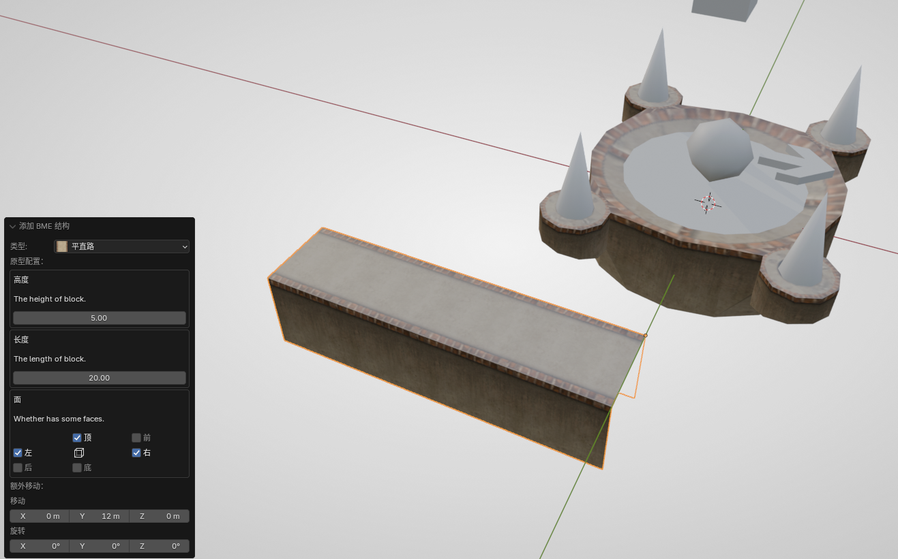
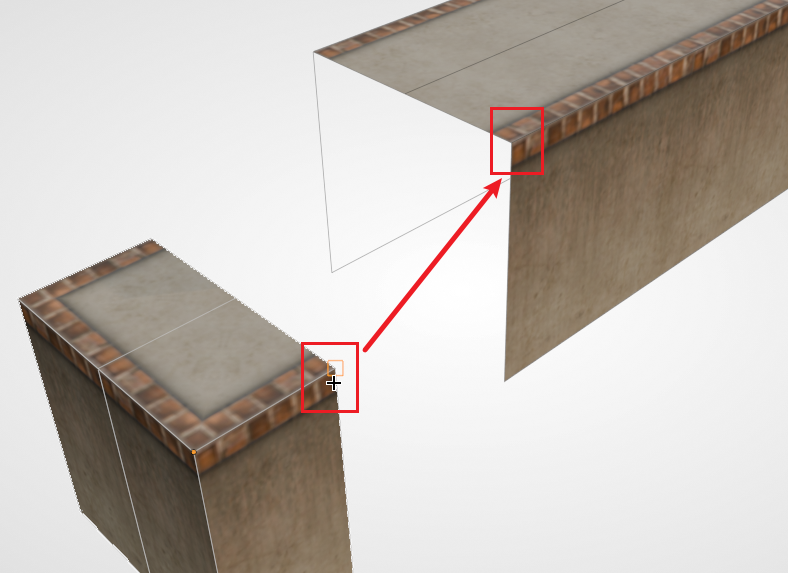
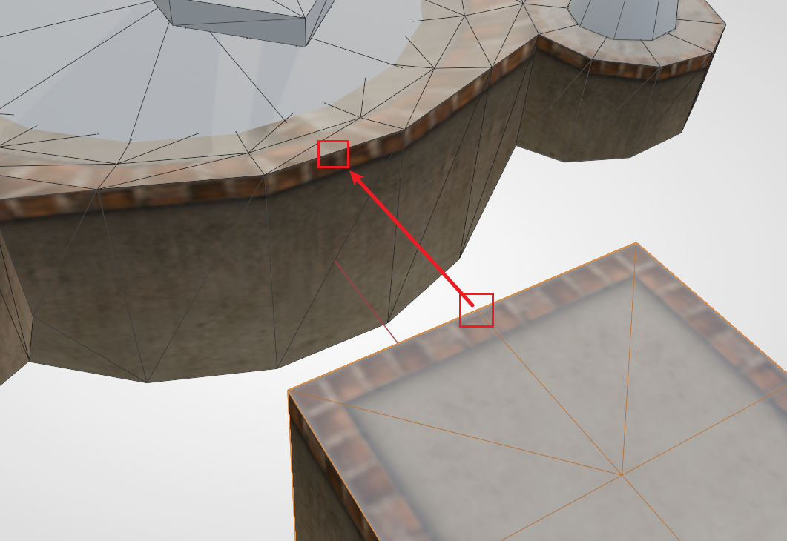
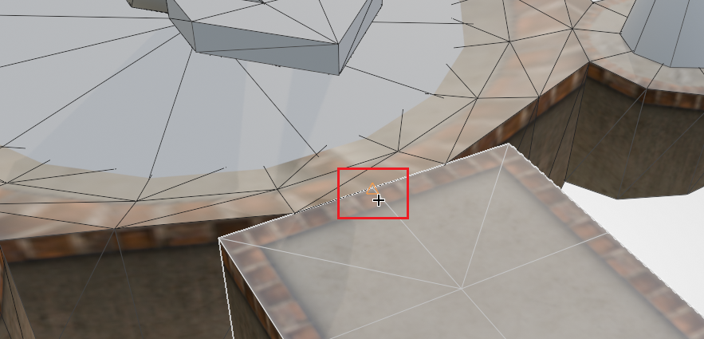
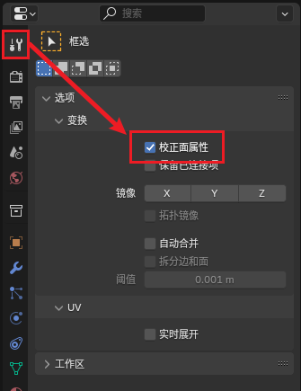
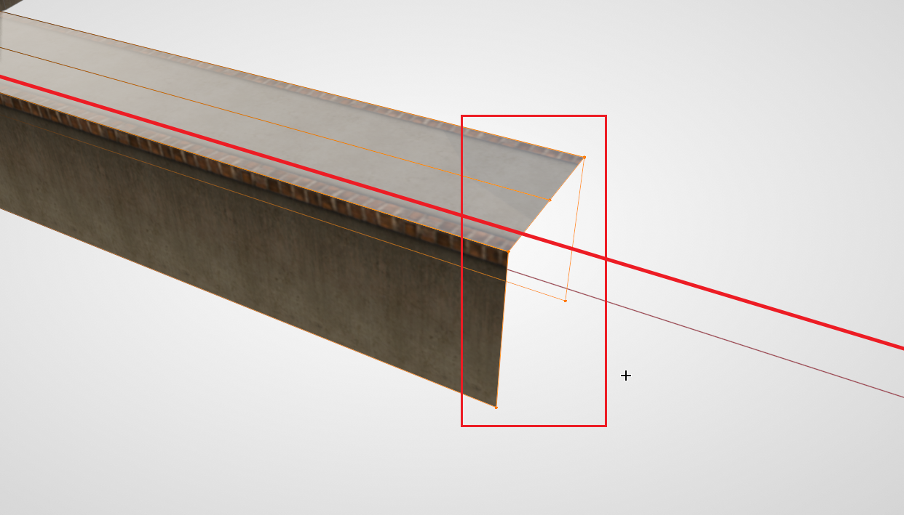
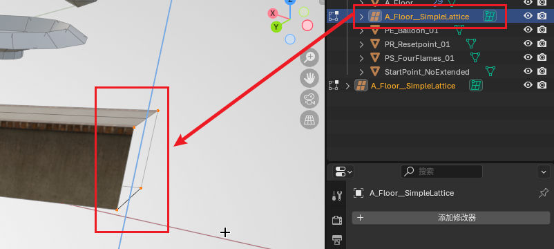
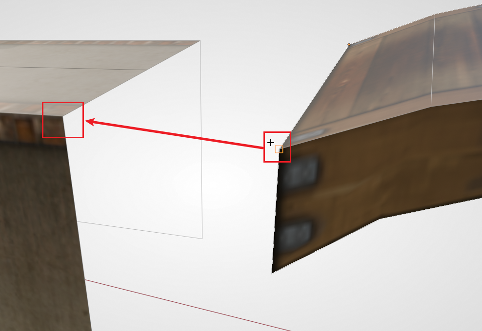
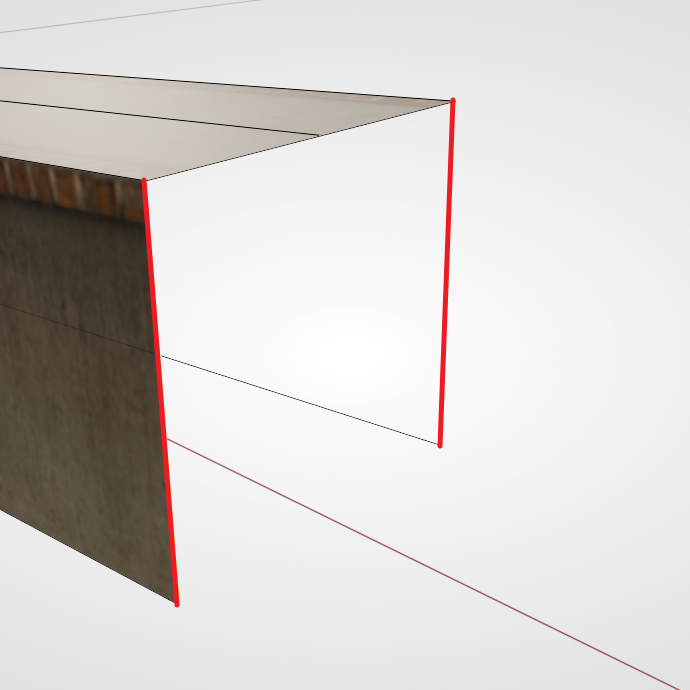

第一小节：拼接路面#
本节我们将演示如何制作 Ballance 中的原版风格路面。
在制图时，最基本、最常用的路面制作方式是拼接。类似于拼拼图，我们用直线路、拐角、路口，这些基本的方块拼接出复杂的道路。
有哪些基本方块#
首先我们需要分清 Ballance 原版风格中一般存在哪几种道路：
- 平地路面：最为常见的，宽度为 5 的路面。
- 宽路面：更宽，两侧带有凸起保护的路面。例如 1-1 开头便是。
- 凹路面：中间有下凹的路面。
- 细边花纹路面：一般用于边缘带凸起保护的大平台。
每种路面都会有几种基本结构：
- 直线
- 拐角
- T 字路口
- 交叉路口
- 直线末端
此外还有一种特殊的，用于平地路和凹路之间的：平凹转换路面。
初步了解了各种路面类型后，我们来实操制作一段路面。
添加平直路#
BBP 已经为我们提供了上述所有路面的基本结构，我们尝试生成一段平直路。首先将3D游标移动到比较空旷的位置。
提示
按住 Shift 的同时点击 鼠标右键 即可快速更改3D游标的位置。
默认情况下，你的3D游标位于世界的原点。由于物体默认会添加在3D游标的位置，所以直接生成路面的话，会被上一小节放置在原点的盘点路面遮挡住，这样不方便观察与选取。一定记得善用3D游标！
按下 Shift + A，生成一段平直路（Normal Floor）。在进行其它操作（包括“移动”）前，首先观察左下方的对话框。对话框中可以选择高度与长度，默认情况下保持高度为 5 即可；长度可以自由设定，后续也有办法修改。
此外注意到下方有一个“面”参数，该参数控制的是路面的各个面是否生成。例如对于平直路来说，默认只生成顶面和左右两个侧面，其它的面都是空的。这是为了节省地图大小以及游戏内渲染开销，制图时习惯删除玩家不可能看到的面。平直路的前后一般会与其它路面相连，所以没必要创建面。当然在某些情况下，前后面也会外露，这时可以在生成时就利用“面”参数将其补上，保证视觉效果上的正常。
这里我们创建一段长度为 20 的路面（不补前后面）备用。

路面拼接#
路面拼接是构建路面中最主要的操作。首先我们在一个实际应用场景中尝试一下。
目前长直路的两端是空的，我们尝试给其中的一端添加一个末端结构。首先添加一个平直路末端（Normal Floor Terminal），保持其默认生成选项。
然后选择该末端结构，按下 G B，选择开口处的一个顶点，将其吸附到平直路开口的对应顶点上，如下图所示：

提示
为了方便演示，上图开启了线框叠加显示，并不是 进入了编辑模式。切记 物体的对齐 永远需要在 非编辑模式下 进行。后续配图如非是 明确指出 需要进入编辑模式，一般都是在物体模式下进行操作。
然后你应该能发现，这两个结构已经完美地贴合在一起了。取消选中之后应该是看不出任何物体接缝的。当然路面材质上 可能 会存在细微的接缝，对于这种情况，由于游戏内一般很难看清，所以我们不做处理即可。
由于此时两个结构只是相邻贴在一起了，你可能希望他们真正地合并为同一个物体，这也很容易，只需要将他们全部选中，然后按下 Ctrl + J 即可合并。但要注意的是，此时我们合并路面只是为了更方便，能够一次性移动多个路面结构，实际上这些路面结构虽然合并为了一个网格，但他们仍然 各自独立。这一点可以先保留不用考虑，等到该教程做整体收尾工作时会一并展示如何真正合并网格。
更多可吸附点#
此时我们的路面是独立与盘点放置的，现在我们需要把路面和盘点对齐。如果你以前使用过 3ds Max 中的对齐，你可能会相当“中心对齐中心”保证两者轴线方向对齐，然后再使用“最大对齐最小”保证路面终端与盘点贴合。实际上我们继续利用强大的吸附功能即可。
先将刚刚的路面经过旋转和移动，使其大致方向、位置与盘点相对应。然后选中路面，按下 G B，选择路面末端 上边的中点，然后吸附至盘点 外侧上边的中点。如下图所示：

正确吸附到盘点上边的中点时应该会像下图这样显示（即中点位置出现一个 三角形标志）：

如果你成功对齐了上述操作，那么你已经学会了如何制作路面了。可以跟随自己的想法再多做几条路面进行练习。
路面伸缩#
假如你已经生成了一段 平直路，但出于某种原因你觉得长度不够（或太长），希望再次调整路面的长度。而这时已经没有 BBP 的对话框能够给你调整长度了，并且你可能会想到缩放操作，但却发现路面的材质也会被拉伸，视觉效果很糟糕。这时其实并不需要再额外创建一段路面，而是可以直接通过移动顶点的方式拉长网格本身。
首先我们按 Tab 进入编辑模式。要注意的是，默认情况下，拉伸网格同样会拉伸路面的材质，我们需要开启 矫正面属性 的功能。开启后，Blender 会自动帮我们矫正 UV，这样材质就会自动延展而不是被暴力拉伸了。开启位置在工具面板的 选项 - 变换 - 矫正面属性。如下图所示：

提示
找不到 矫正面属性 开关？要先进入 编辑模式 才会有这个开关哦。
然后开始操作顶点。按下 Alt + Z 开启透视模式，选中 缺口这一端 的所有顶点，然后按下 G，再限制一个轴（下图中的红线是限制的 X 轴），沿轴向拖动顶点即可。

提示
务必开启透视模式再选择顶点。因为 BME 创建的结构，可能会有多个顶点位于同一个位置。不开启透视模式会导致选择不全，无法完整地拖动端面。
制作坡面#
在 Ballance 中的赛道并不总是位于同一水平高度，坡面是非常常见的。下面将演示如何制作坡面。
对于一个普通的 直路，制作坡面是非常简单的。因为其只由两端的顶点决定中间的线条，所以根据上述描述的伸缩路面的方法，选中其中一端的顶点，然后将移动限制在 Z 轴即可。
但有些时候，中间的直线并不完全由两端的点确定（即中间可能有其它的分段，例如我们前不久结合到一起的带端面的路面），此时我们需要用到更高级的方法来构成坡面，最常用的方式为 FFD（晶格形变）。
提示
晶格形变是建模中常用的一种形变手段，可以将一个复杂的网格映射到一个简单的立方体网格，编辑晶格的网格会将各顶点的位移传递给目标网格。这里我们对一个路面使用晶格形变，是为了制作坡面时均匀地传递坡度变化，使路面在形变之后仍能保持直线。
由于 Blender 自带的晶格不太方便 Ballance 制图使用 （事实上就是相当便秘），这里我们推荐使用一个叫做 Simple Lattice 的插件（见工具安装与配置）。安装启用插件后，右键路面，选择菜单里的 Simple Lattice Create，此时插件会做几件事：
- 根据选中物体的边界框创建一个晶格
- 将选中物体绑定到这个晶格
- 进入晶格的编辑模式
一般情况下我们制作坡面时不需要设置额外的晶格细分，插值类型保持线性即可。更丰富的 FFD 参数可以自行探索。此时选中其中一端的点（此时应该是处于晶格的编辑模式，而不是物体的编辑模式），然后向上移动，即可看到坡面效果了。

一般情况下，我们可以保留这个晶格，以便后续继续调整。如果你对坡度满意了，可以将现在的状态固定下来，操作方法如下：首先记得退出编辑模式，然后选中物体，找到它的修改器面板，应该会看到一个 SimpleLattice 的修改器，选中该修改器后按下 Ctrl + A 应用修改器。应用完毕后，网格就会固定成当前的状态。此时 Simple Lattice 创建的晶格也可以被安全地删除了。
补面#
我们注意到路面还有一面是有缺口的，如果拼接其它路块如路口、平凹转换等，或者直接拼接一个道路末端结构，这个面会被挡住，我们就没必要将其补上。但也有很多时候我们需要直接补上这个面，而不是拼接一个新的末端。
假设我们想在这个位置后面衔接一个小拱桥，按照原版的地图风格，这个面应该被补为一个侧面的材质。首先我们从资产库中拖一个小拱桥出来，使用吸附功能将路面和拱桥拼接在一起。

可以发现，连接处由于路面没有被遮挡，缺失的面露出，会非常难看。此时我们使用孤立模式单独编辑路面。选中路面后按下 /，可以暂时隐藏其它物体（稍后再按 / 就可以回到正常模式），只观察路面。进入编辑模式，我们按 2 切换到 边模式，然后选中缺口的两条 侧边，如下图所示（图中的红线就是要选中的两条边）：

然后按下 F 创建一个面。这时你应该能看见一个很糊的侧面被补出来了。此时我们保持对这个面的选择（或者切换到 面模式 重新选中这个面），然后打开 Ballance 菜单 中的 展平 UV 功能。注意到左下角的对话框，我们需要选择路面专用的展平选项（第一排的第二个），然后调整参考边（对于一个四边形的面，只需尝试 0、1、2、3 即可），直到我们侧面的花纹变得合理。这样就补好了一个面。

你也可以用同样的方法，给我们刚刚拖放出来的小拱桥补面。
接下来#
可以自行创建一些路面，构建迷宫桥梁等结构。熟练路面操作后，可以进入到下一小节：第二小节：构建钢轨。
此外，除了上述拼接的方式，我们也有更高级的方式创建路面，例如放样制作路面。